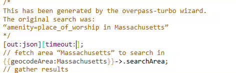

Accessing OpenStreetMap Data Guide
OpenStreetMap (OSM) offers a rich and dynamic source of geospatial data, often filling gaps where traditional datasets are unavailable. This guide explores two methods for extracting OSM data, allowing you to choose the approach that best suits your project's requirements: a general extraction of common features, and a more specific extraction based on feature type.
Before diving into the extraction methods, it's helpful to understand the nature of OpenStreetMap data. OSM is a collaborative, crowd-contributed project, akin to Wikipedia for maps. This means its data is constantly updated by users worldwide, offering a broad range of information but also requiring a nuanced understanding of its completeness and accuracy.
When to Use OpenStreetMap Data
If you need quick base layers, a general visual sense of a place, or data for areas where official datasets are scarce, OSM is a valuable resource. It's excellent for obtaining information on roads, rivers, trails, buildings, and other common features.
However, for projects requiring verifiable data sources with robust data collection methodologies, OSM data may not be sufficient on its own due to its crowd-sourced nature. In such cases, it's crucial to exercise the same healthy skepticism you would with any user-contributed content and consider supplementing with official sources when available.
Method 1: Extracting Standard Data Layers via GeoFabrik
This method is ideal when you need a broad set of common map features like waterways, buildings, transport networks, places, and land use data for a particular region. It's a straightforward approach for obtaining pre-packaged data extracts.
Understanding GeoFabrik Extracts
GeoFabrik is a service that provides daily updated OSM data extracts for various regions around the world. These extracts are convenient because they are pre-processed and ready for use in common GIS software.
Step-by-Step Guide to Downloading Data from GeoFabrik
- Visit GeoFabrik, a tool providing OSM data that is updated daily.
- Remember, this data is crowd-contributed, so it changes every day.
- Select the appropriate region. For example, if you're searching for data for Venice, Italy, you would select "Europe".
- Select the additional sub-region. Following the Venice example, since Venice is in the Northeast of Italy, you would select "Nord-Est".
Tip
When navigating the sub-regions on the GeoFabrik site, you can often see a preview of the geographic extent associated with each selection.
- To use this data in a typical desktop GIS environment such as ArcGIS Pro or QGIS, select the .shp.zip quick link. This will download the data to your computer.
The data comes downloaded in multiple layers, each representing a different kind of data. For instance, you will find:
- waterways
- transport
- places
- land use
- buildings
Each of these layers is available as a shapefile you can use in GIS software.
Also included in the download is a README file, which links to documentation. In the documentation, you can read the data attributes and understand how to interpret the data.
The documentation is available as a PDF, OpenStreetMap Data in Layered GIS Data Format.
Method 2: Specifying Feature Types
This method is more granular, allowing you to extract data for a specific type of feature within a particular geographic extent. It's particularly useful when you need to isolate certain elements, such as all shopping malls or bicycle repair shops, and don't want to sift through broader datasets.
How OpenStreetMap Data is Created and Tagged
To effectively extract specific feature types, it's helpful to understand how data is entered into OSM. Any OSM user can add points, lines, and polygons to represent real-world phenomena. While there are standards for how data should be tagged, qualitative information about each feature is often optional. This means a restaurant might be tagged with a specific cuisine type in one instance, and have a blank or null value for "cuisine" in another.
OSM defines standard ways for entering feature data, but sometimes people enter data incompletely or incorrectly.
Query Tips for Specific Feature Extraction
Before using an extraction tool like overpass-turbo.eu or QuickOSM QGIS plugin, it's helpful to research how features are typically tagged in the area you're interested in.
The first step is to consult the OpenStreetMap Map Features Wiki and identify how a feature is supposed to be tagged. For instance, if you're looking for shopping malls, the suggested key-value pair is shop and mall, respectively.
In practice, however, features can be tagged in various ways. For example, a contributor might tag a building correctly using the shop key with the mall value, while another might use the building tag with mall as the value.
Such tagging variations are important to note because queries are constructed by supplying key-value pairs to the extraction tool. If a significant number of your desired features are tagged differently than the OSM standard, you'll need to account for this when building your query.
Reverse Search Strategy
We suggest visiting OpenStreetMap (OSM) first and inspecting the attributes of a selection of your desired features. You can inspect attributes by right-clicking an area on the map, selecting "Query features", and clicking on the feature you are interested in. Note how the data is structured, and remember it for when you are building your query.
How to Export Data with Overpass-turbo.edu
Overpass-turbo.eu is a browser tool which lets you build OSM queries using a graphical user interface, without requiring any specialized software.
- Visit overpass-turbo.eu.
- Select the
wizardbutton to construct your query. You will know the key-value pairs by having consulted the OpenStreetMap Map Features Wiki. Build and run the query. - Zoom to the area of your extract and confirm the data appears.
- Select
Export→Data→GeoJSONto download the data for GIS mapping.
Note: If you receive an error message that the data cannot be retrieved because the server is overloaded, try changing the timeout length. Go back to the text box and trying changing the timeout from 25 seconds to something like 900 seconds.
How to Export Data with QuickOSM
QuickOSM is a plugin for desktop GIS QGIS to build OSM queries. It is robust and powerful. If you are having trouble with overpass-turbo.eu, it may be worthwhile trying QuickOSM in QGIS.
- Download QGIS if you haven't already.
- In the main (top, horizontal) QGIS menu, select "Plugins", then "Manage and Install Plugins".
- Search for "QuickOSM" and install the plugin.
- Once installed, the plugin will appear under the "Vector" menu in the main QGIS menu. Select "Vector", then "QuickOSM", then "QuickOSM". The QuickOSM wizard will open.
There are more advanced ways to build queries using this tool, but we are going to stick with the QuickQuery tab, which requires only the key, value, and location.
- In the QuickQuery tab, input the appropriate key, value, and location for your desired features. For example, to find malls in Jakarta:
- key: shop
- value: mall
- location: Jakarta
- Select "Run query".
The tool will automatically render all available features as data layers in your QGIS document. For features like malls, you might see both a point and polygon layer.
If your query returns no features, it's possible that no features of that type have been contributed in the area you are searching. However, it's also highly likely you may need to construct your query differently. We suggest researching how your desired features have been tagged in OpenStreetMap, as outlined in the reverse search section above, and trying different queries where appropriate.
Example Alternate Query
If the initial query for "shop" and "mall" doesn't yield results, you might try:
- key: building
- value: mall
- location: Jakarta
If a significant number of features have alternate tagging, you can export them separately and then later merge the shapefiles together to create one complete layer. For instance, a query using building and mall as key-value pairs for Jakarta returned thirty-three instances of malls.
To save the results as a new data layer, right-click the layer in the layer list and select "Export". Choose "Save features as" and save the data someplace logical, naming the file and selecting "geoJSON" as the filetype.